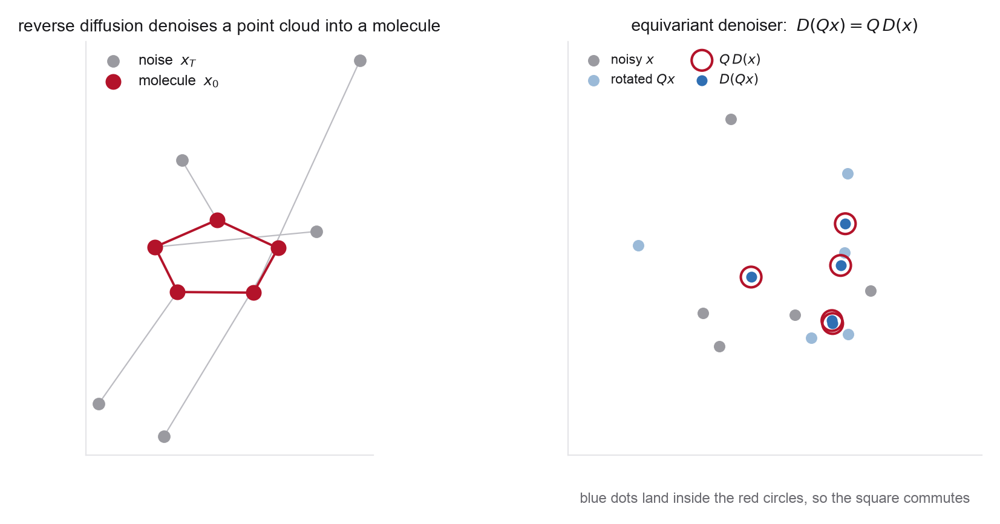

- Invariance vs equivariance, and the invariant-base / equivariant-map argument (Week 1, Problems 1 and 6)
- The diffusion training and sampling loop from Problem 3
- One message-passing step on a graph; the E(n)-equivariant update rule
- Center of geometry (arithmetic mean) and the zero-CoG linear subspace
- RDKit for generating a small 3D conformer dataset (or a provided one)
- Hoogeboom et al. (molecular EDM), Sections 3 and 4 for the zero-CoG subspace and the equivariant denoiser
- Satorras et al., E(n) Equivariant Graph Neural Networks for the exact update equations
- GeoDiff for the fixed-graph, coordinates-only variant
- Week 1 Problem 6 for the equivariance sanity checks you reuse
Terminology: two "EDM"s. Karras-EDM (2206.00364) is the preconditioned-denoiser design space of Problem 2. E(3)-EDM (2203.17003) is Hoogeboom et al.'s equivariant molecule model, which originally uses a VP-style diffusion, predicts the noise with an EGNN, and projects its coordinate output into the zero-center-of-geometry subspace. What you build here is not a literal reimplementation of E(3)-EDM; it is a Karras-preconditioned equivariant coordinate diffusion model that borrows E(3)-EDM's geometry and GeoDiff's fixed-graph setup. That hybrid is sensible and simpler to train, but say plainly which pieces come from where.
Problem 3 trained a diffusion model where the state was an unstructured vector. Real molecules are not unstructured: a configuration is a set of atoms in 3D, and a distribution over configurations must not care how you rotate or translate the whole thing, or how you order the atoms. This lab builds the smallest model that respects all of that, the equivariant diffusion model, on a tiny dataset you can train on a laptop. The point is to see exactly why equivariance is an architectural choice and what the zero-center-of-geometry subspace is doing.

Implement a small set of functions with clean interfaces.
load_dataset(name, n) # 3D coords (+ types) for one small molecule zero_cog(x) # subtract arithmetic mean (center of geometry) egnn_denoiser(x, h, sigma) # E(n)-equivariant D_theta on coords x, features h equiv_error_rot(model, x) # ||D(Qx) - Q D(x)|| on centered inputs, random Q generate(model, z, sigmas) # deterministic map from a fixed prior cloud z internal_validation(samples, graph) # bond, angle, torsion, clash distributions net_force_torque(score, x) # sum_i s_i and sum_i x_i x s_i (should vanish)
- State space and the zero-CoG subspace. Take one small achiral molecule (ethanol is a good default) and build a dataset of a few thousand conformers, either with RDKit or, for a cleaner physics version, by MCMC-sampling a butane-like four-bead toy with a known bond/angle/torsion energy (this connects directly to the length-scale discussion of Problem 2). Describe the RDKit set honestly as an empirical conformer ensemble, not automatically a canonical Boltzmann ensemble. Center every configuration by subtracting the arithmetic mean of the coordinates, the center of geometry \(\sum_i x_i=0\) used by E(3)-EDM, not the mass-weighted center of mass. Explain why a nonzero translation-invariant density over unconstrained absolute coordinates cannot be normalized (every translated copy has the same density), and why projecting onto the \(3(n-1)\)-dimensional zero-CoG subspace fixes this. Sample your Gaussian prior in that subspace.
- An equivariant denoiser, and the right transformation law. Implement a minimal E(n)-equivariant graph network as \(D_\theta\): coordinates update along relative directions, \(x_i \leftarrow x_i + \sum_{j\neq i}(x_i-x_j)\,\phi\big(\|x_i-x_j\|^2,h_i,h_j\big)\), scalar features \(h_i\) from invariant messages, conditioned on \(\sigma\). First get the transformation law right. A position-valued denoiser obeys \(D(Qx+\mathbf 1 t^\top)=Q D(x)+\mathbf 1 t^\top\), whereas a centered score- or noise-valued output obeys \(s(Qx+\mathbf 1 t^\top)=Q s(x)\) because it is a zero-mean displacement field. Since you run everything projected into the zero-CoG subspace, translations are no longer transformations within the state space, so test rotations, reflections, and permutations on centered inputs (or, if you want to test translation too, define \(D_{\mathrm{full}}(x)=\bar x + D_{\mathrm{centered}}(x-\bar x)\)). Verify
equiv_error_rotis at floating-point level; contrast with a plain MLP on flattened coordinates, whose error is order one. - Reflections and chirality. An EGNN built from distances is equivariant not only to rotations and translations but also to reflections and node permutations, so it realizes the full \(E(3)\) (which includes reflections), not \(SE(3)\). Verify this: your
equiv_error_rotstays tiny even for \(Q\) with \(\det Q=-1\). Explain the consequence, an \(O(3)\)-invariant generative model treats a molecule and its mirror image as equiprobable, which is harmless for achiral ethanol but wrong for a stereochemically fixed chiral molecule such as alanine dipeptide. State what extra ingredient (a chirality-sensitive, reflection-odd feature, i.e. reducing the group to \(SE(3)\)) would be needed, and why this lab uses an achiral molecule. - Train. Reuse the EDM-preconditioned denoising loss from Problem 3, projecting both the added noise and the denoiser output onto the zero-CoG subspace so the dynamics never leave it. Train, plot the loss, and confirm the equivariance error stays negligible throughout.
- Generate and validate beyond bonds. Sample new conformers with the Heun probability-flow ODE in the zero-CoG subspace. Keep the bonded graph fixed and diffuse only coordinates (the GeoDiff setting) so "validity" is well defined. Validate physically with at least one nonlocal quantity in addition to bond lengths and angles: the torsion-angle distribution, a nonbonded clash rate or pairwise-distance-matrix statistic, or a signed-volume/chirality diagnostic. Report how many samples have all bonds within tolerance and whether the torsion populations match the data.
- Invariance, tested pathwise. Demonstrate the payoff of equivariance without retraining. For the deterministic sampler, show \(G(Qz)=Q\,G(z)\) on the same initial Gaussian cloud \(z\) (for a stochastic sampler, rotate the initial state and every Gaussian increment together); conclude that the distribution of any rotation-invariant observable is exactly invariant, the GeoDiff construction of an equivariant transition kernel on an invariant prior. As an additional exact-symmetry diagnostic, prove and check that for the exact score of a translation- and rotation-invariant density the net score-force and score-torque vanish, \(\sum_i s_i(x)=0\) and \(\sum_i x_i\times s_i(x)=0\); these are concrete "zero net force / zero net torque" checks a physicist will recognize.
- Toward the real models. Write a short paragraph on two extensions you did not implement. (a) Atom types: E(3)-EDM diffuses a continuous relaxation of discrete types jointly with coordinates; explain the scale-mismatch issue from Problem 2 that the differing natural scales of types and coordinates raise. (b) Periodicity: a crystal is not just "rotation and translation replaced by a space group." It adds coordinates taken modulo lattice translations, periodic neighbor images with minimum-image geometry, a variable lattice/cell, non-uniqueness under change of lattice basis, and possibly a material-specific space group. State concretely what fails if a nonperiodic molecular denoiser is applied unchanged: distances across cell boundaries are wrong, wrapped coordinates are discontinuous, the lattice is absent, and equivalent cell representations need not get equivalent predictions. (Weeks 10 and 11 are these in full.)